This document describes how to set up multi-factor authentication (MFA) for Mobile VPN with SSL. Your WatchGuard Firebox must already be configured and deployed before you set up MFA with Okta.
WatchGuard provides integration instructions to help our customers configure WatchGuard products to work with products created by other organizations. If you need more information or technical support about how to configure a third-party product, go tosee the documentation and support resources for that product.
Your WatchGuard Firebox can be configured to support MFA in several modes. For this integration, we set up RADIUS with Okta.
For RADIUS authentication, users can authenticate with a push notification or a time-based one-time password (TOTP). This integration guide describes the steps for both authentication methods.
Contents
Integration Summary
The hardware and software used in this guide include:
- Firebox with Fireware v12.10
- Okta RADIUS Server Agent 2.19.0 or higher
- Okta Verify app installed on iOS 16 or higher
Topology
This topology diagram shows the data flow for multi-factor authentication with a WatchGuard Firebox and Okta.
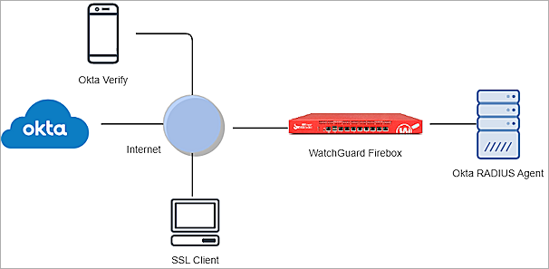
Before You Begin
Before you begin, make sure that:
- A token is assigned to a user in Okta Verify.
- You have installed and configured the Okta RADIUS Server Agent.
Configure the Firebox
To configure the Firebox with MFA, perform these steps:
Configure RADIUS Authentication
When a user authenticates with Okta MFA, Okta does not send a response to the Firebox until:
- The user approves the push notification.
- The push authentication expires.
- The user verifies the time-based one-time password (TOTP).
To configure the RADIUS authentication:
- Log in to Fireware Web UI (https://<your firebox IP address>:8080).
- Select Authentication > Servers.
The Authentication Servers page opens.
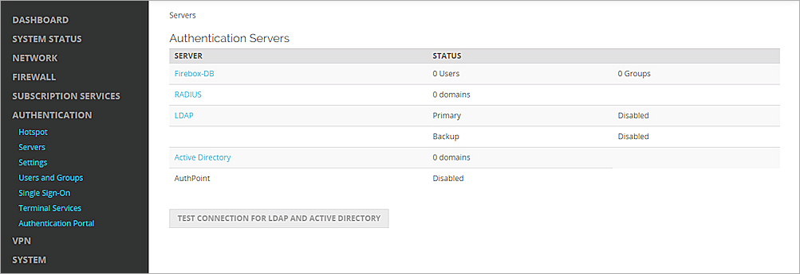
- From the Authentication Servers list, click RADIUS.
The RADIUS page opens. - Click Add.
The Add page opens.
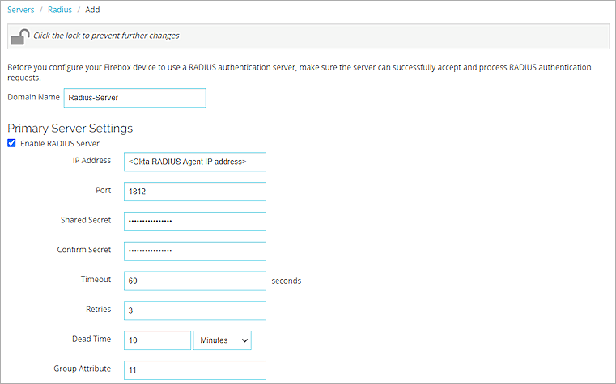
- In the Domain Name text box, type the domain name for this RADIUS server. Users must specify this domain name on the user login page. You cannot change the domain name after you save the settings.
- From the Primary Server Settings section, select the Enable RADIUS Server check box.
- In the IP Address text box, type the IP address of the RADIUS server (the Okta RADIUS Server Agent).
- In the Port text box, keep the default value of 1812. This is the default port used for communication with the RADIUS server (the Okta RADIUS Server Agent).
- In the Shared Secret and Confirm Secret text boxes, type a shared secret key. This key is used to communicate with the RADIUS server (the Okta RADIUS Server Agent).
- In the Timeout text box, type 60.
- For the Group Attribute text box, keep the default value.
- Click Save.
Configure Mobile VPN with SSL
To configure Mobile VPN with SSL:
- Select VPN > Mobile VPN.
The Mobile VPN page opens.
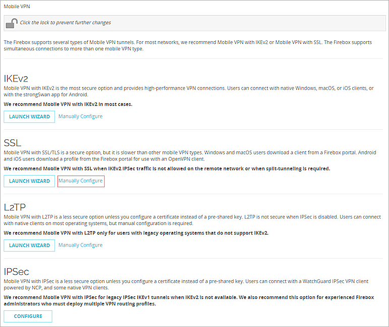
- From the SSL section, click Manually Configure.
The Configure page opens.
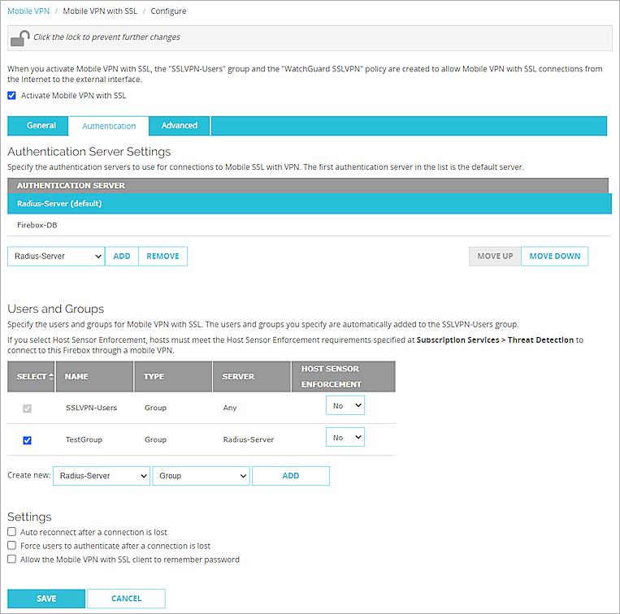
- Select the Activate Mobile VPN with SSL check box.
- From the General tab, in the Primary text box, type the external IP address or domain name of the Firebox. This is the IP address or domain name that Mobile VPN with SSL clients connect to by default.
- Select the Authentication tab.
- From the Authentication Server drop-down list, select the authentication server you created.
- Click Add.
- From the Authentication Server list, select your authentication server.
- To make this authentication server the default server, click Move Up until the server appears at the top of the list.
Mobile VPN with SSL uses the default authentication server unless a user specifies a different authentication server in the Username text box on the Mobile VPN with SSL client.If you have Mobile VPN with SSL configured and you only want to test Okta MFA, do not make your authentication server the default server.
- From the Users and Groups section, from the Create New drop-down list, select the authentication server you created.
- From the adjacent drop-down list, select Group.
You can add a user or a group. In our example, we add a group.
- To add a group to authenticate, click Add.
- For Type, select Group.
The Add User or Group dialog box opens. - In the Name text box, type a name for the group. The name of this group must match the name of the Okta group your users belong to. If you use the default SSLVPN-Users group name, you must add an SSLVPN-Users group to Okta.
If you add a user, the name of the user must match the name of the Okta user.
- From the Authentication Server drop-down list, select your authentication server.
- Click Save.
- Click Save.
Configure Okta
To configure Okta, complete these steps:
Configure Multi-factor Authentication
- Log in to the Okta Admin Console.
- Select Security > Authenticators > Setup.
The Setup page opens.
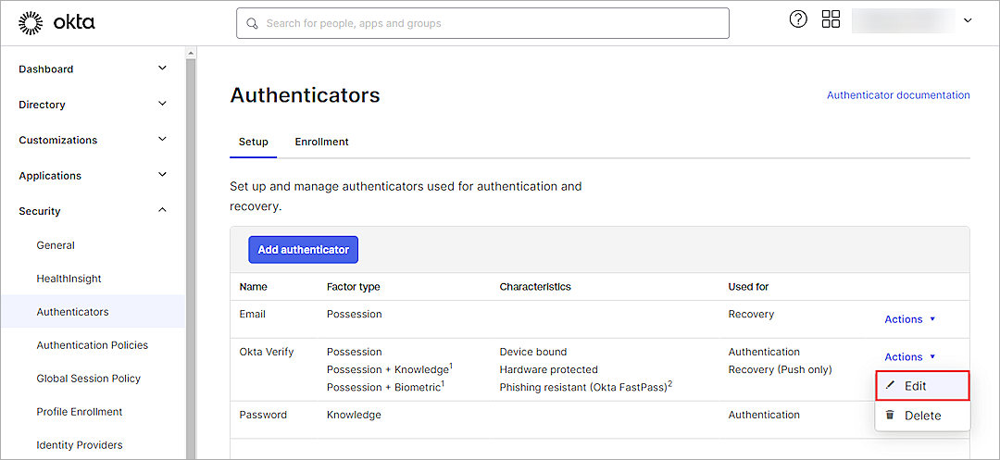
- For the Okta Verify authenticator, from the Actions drop-down list, select Edit. If Okta Verify is not listed, click Add Authenticator to add it.
The Okta Verify page opens.
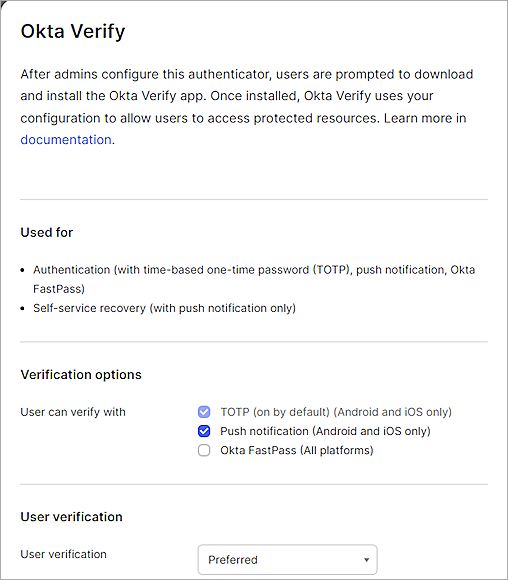
- From the Verification Options section, select the Push Notification (Android and iOS Only) check box.
- (Optional) Clear the Okta FastPass (All Platfoms) check box.
- From the User Verification drop-down list, keep the default Preferred value.
- Click Save.
- Select Security > Authenticators > Enrollment.
- Select Default Policy, then click Edit.
The Edit Policy page opens.
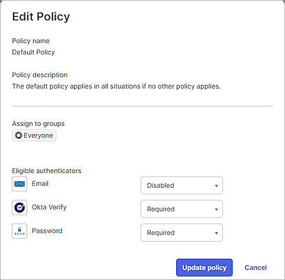
- From the Okta Verify drop-down list, select Required.
- Click Update Policy.
Add an Okta Group and User
To add a group in Okta:
- Select Directory > Groups > Add Group.
- In the Name text box, type a group name.
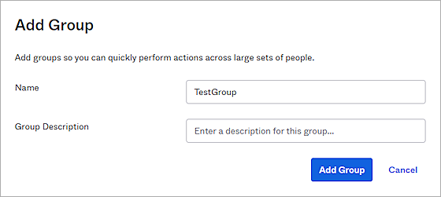
- Click Add Group.
To add a user in Okta:
- Select Directory > People > Add Person.
The Add Person page opens.
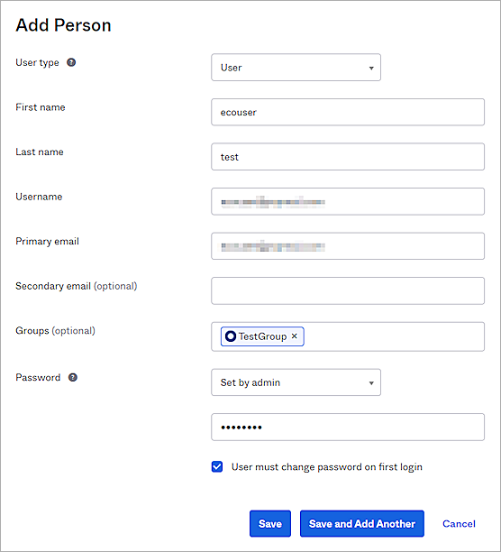
- Specify the information for your user.
- Click Save.
You can import users and groups from Active Directory to Okta. For information about how to import, go to the Okta documentation.
Configure the RADIUS Application
To configure the RADIUS application:
- Select Applications > Applications > Browse App Catalog.
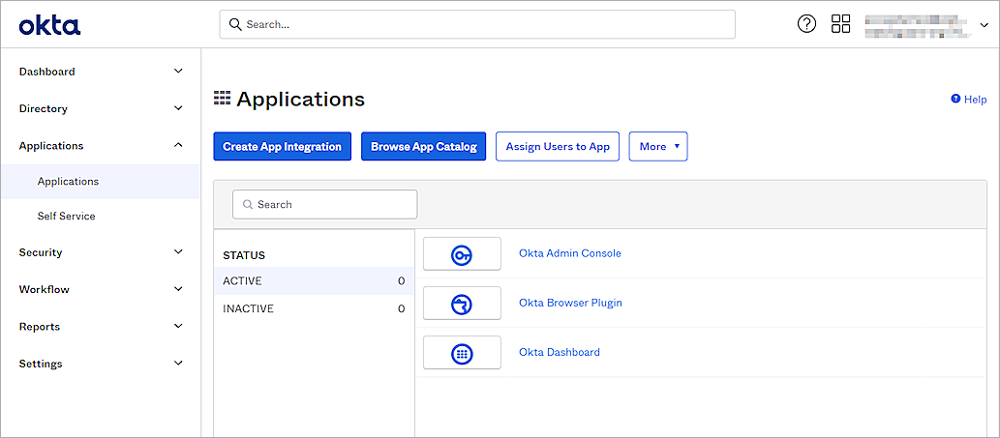
- From the Browse App Integration Catalog section, search for RADIUS Application, then click Add.
The Add RADIUS Application page opens.
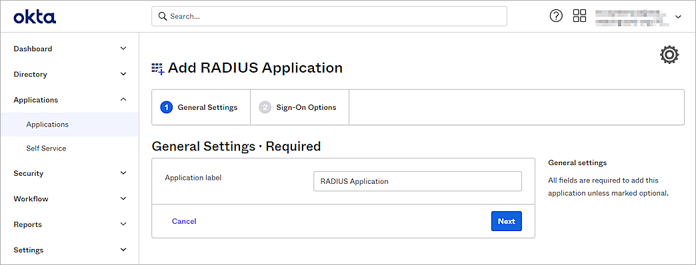
- From the General Settings section, in the Application Label text box, type a description name.
- Click Next.
The Sign-on Options page opens.
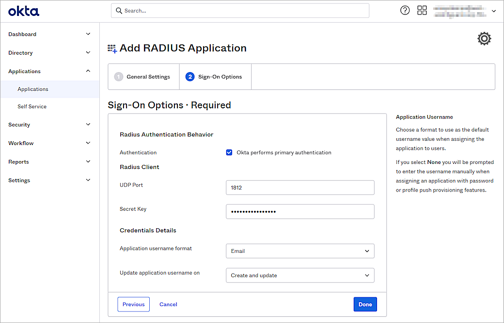
- From the Radius Client section, in the UDP Port text box, type 1812.
- In the Secret Key text box, type the shared secret key. This is the password that the RADIUS server (the Okta RADIUS Server Agent ) and the RADIUS client (the Firebox) will use to communicate.
- From the Credentials Details section, from the Application Username Format drop-down list, select the appropriate user name format. In our example, we select Email.
- Keep the default values for all other settings.
- Click Done.
- Select the Sign On tab.
The Sign On settings page opens.
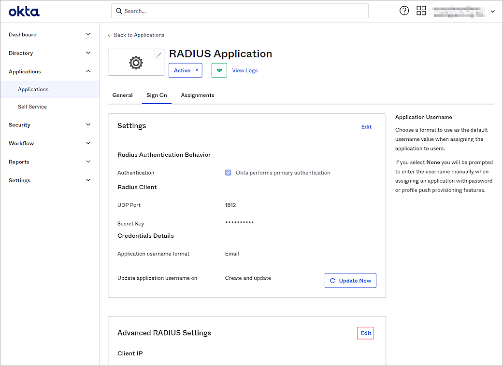
- From the Advanced RADIUS Settings section, click Edit.
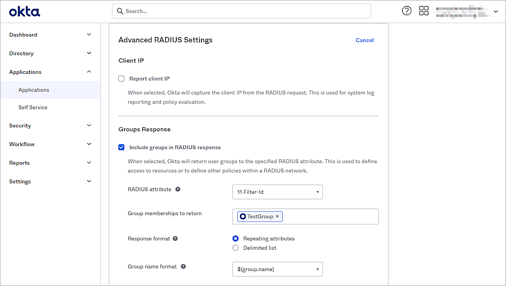
- From the Groups Response section, select the Include Groups in RADIUS Response check box. In our example, we use group authentication. To use user authentication, you can skip steps 12–14.
- From the RADIUS Attribute drop-down list, select 11 Filter-Id.
- In the Group Memberships to Return text box, type and select the group.
- (Optional) From the Authentication section, select the Accept Password and Security Token in the Same Login Request check box.
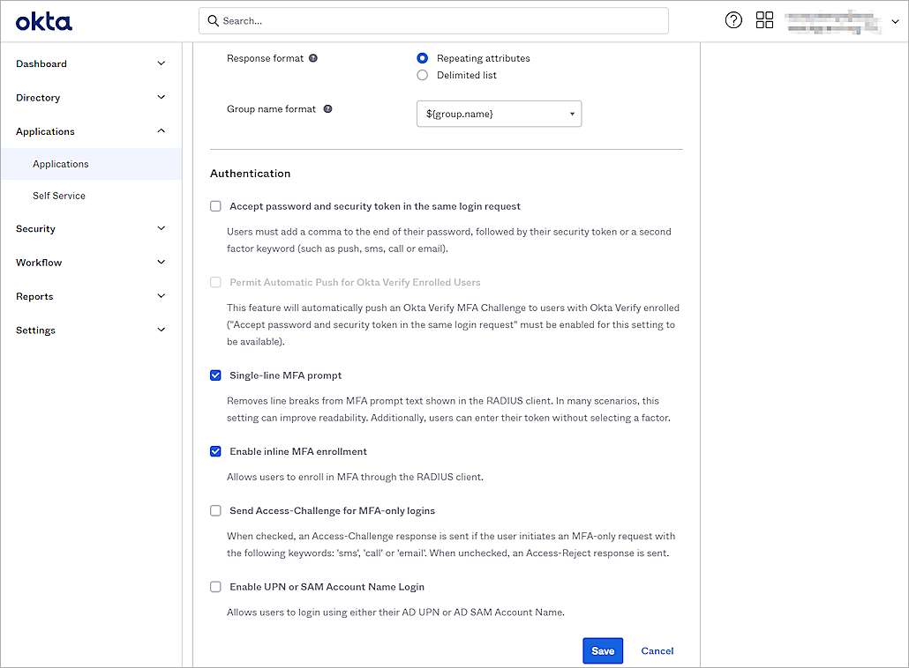
- (Optional) Select the Permit Automatic Push for Okta Verify Enrolled Users check box.
- (Optional) Select the Send Access-Challenge for MFA-Only Logins check box.
- (Optional) Select the Enable UPN or SAM Account Name Login check box.
- Keep the default values for all other settings.
- Click Save.
- Select the Assignments tab.
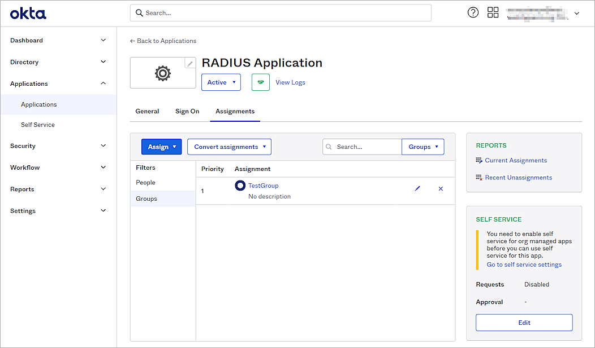
- Select Assign > Assign to Groups.
If you select Assign to People, the user must belong to the group you configured in the Groups Response section. - Select the group, then click Assign.
- Click Done.
The default RADIUS session timeout sent by the Okta RADIUS agent is 60 seconds, and the VPN connection might be disconnected within two minutes. To solve this problem, you can add the ragent.mfa.timeout.seconds parameter to the Okta RADIUS agent config.properties file. For information about how to configure the parameter, go to Configure Properties in the Okta documentation.
Test the Integration
To test the integration of Okta and WatchGuard Mobile VPN with SSL, you authenticate with a mobile token on your mobile device. For RADIUS resources, you can authenticate with a time-based one-time password (TOTP) or a push notification.
If you configure Mobile VPN with SSL to use more than one authentication server, users who do not use the default authentication server must specify the authentication server or domain as part of the user name. For more information and examples, go to Download, Install, and Connect the Mobile VPN with SSL Client.
To authenticate with push:
- Open the Mobile VPN with SSL client.
- Type your Okta user name and password.
- Click Connect.
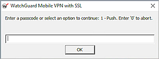
- Type 1.
- Click OK.
- Approve the authentication request that is sent to your mobile device.
You are connected successfully.
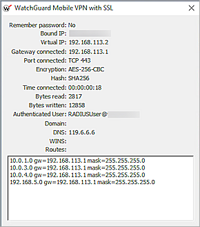
To authenticate with a TOTP:
- Open the Mobile VPN with SSL client.
- Type your Okta user name and password.
- Click Connect.
- Type the passcode shown in the Okta Verify mobile app.
- Click OK.
You are connected successfully.
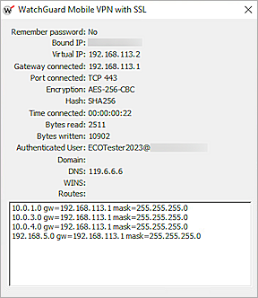